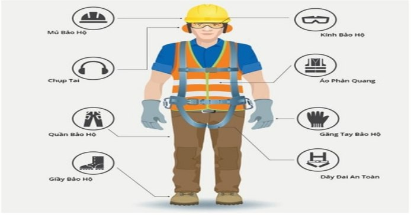
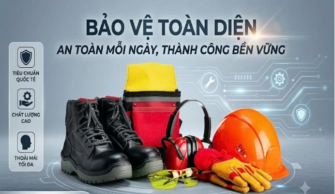
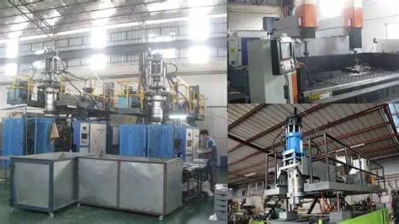
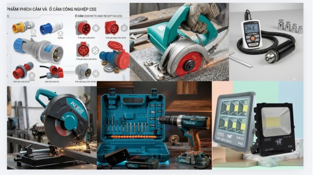

Đằng sau mỗi hoạt động sản xuất hiệu quả là sự phối hợp nhịp nhàng giữa con người, máy móc và các thiết bị hỗ trợ. Không chỉ góp phần duy trì tiến độ công việc, những yếu tố này còn gắn liền với yêu cầu bảo đảm an toàn cho người lao động. Từ thực tế đó, thị trường cung ứng máy móc, thiết bị và vật tư công nghiệp ngày càng phát triển đáp ứng nhu cầu sử dụng đa dạng của doanh nghiệp. Tại Bắc Ninh, Công ty TNHH Hóa Đông là một trong những đơn vị hoạt động trong lĩnh vực cung ứng các sản phẩm này, phục vụ khách hàng trong lĩnh vực sản xuất, xây dựng và công nghiệp.
An toàn lao động từ yêu cầu thực tế trong sản xuất
Tại các nhà máy, xưởng sản xuất hay công trường xây dựng, người lao động thường xuyên phải làm việc trong môi trường có nhiều yếu tố tiềm ẩn nguy cơ mất an toàn. Tùy theo tính chất công việc, những rủi ro có thể đến từ máy móc vận hành, hệ thống điện, tiếng ồn, bụi công nghiệp hoặc các thao tác kỹ thuật đòi hỏi độ chính xác cao.

Trong điều kiện đó, trang bị bảo hộ lao động không đơn thuần là yêu cầu mang tính thủ tục mà còn là giải pháp trực tiếp nhằm hạn chế nguy cơ tai nạn, bảo vệ sức khỏe người lao động. Từ quần áo bảo hộ, giày, găng tay, kính bảo hộ đến mũ bảo hộ và các thiết bị chuyên dụng, mỗi sản phẩm đều cần được lựa chọn dựa trên môi trường và đặc thù công việc.

Bên cạnh thiết bị bảo hộ, máy móc và vật tư phục vụ sản xuất cũng cần đáp ứng các yêu cầu về chất lượng, thông số kỹ thuật và khả năng vận hành. Việc lựa chọn đúng sản phẩm không chỉ góp phần bảo đảm an toàn mà còn giúp doanh nghiệp duy trì hoạt động ổn định, hạn chế gián đoạn trong quá trình sản xuất.

Đây cũng là cơ sở để các đơn vị cung ứng thiết bị công nghiệp ngày càng chú trọng hơn đến việc tìm hiểu nhu cầu thực tế, thay vì chỉ tập trung vào số lượng và chủng loại hàng hóa.
Đa dạng sản phẩm, đáp ứng nhu cầu thực tế
Hoạt động trong lĩnh vực cung ứng máy móc, thiết bị và vật tư công nghiệp, Công ty TNHH Hóa Đông hướng đến việc đáp ứng nhu cầu sử dụng đa dạng của các đơn vị sản xuất, xây dựng và cơ khí. Danh mục sản phẩm của công ty bao gồm nhiều nhóm hàng như máy móc, dụng cụ cơ khí, thiết bị điện, thiết bị khí nén, dụng cụ đo lường, vật tư công nghiệp và phương tiện bảo hộ lao động.

Với mỗi nhóm sản phẩm, yêu cầu lựa chọn có những đặc điểm riêng. Với các thiết bị máy móc cần phù hợp với công suất và quy trình vận hành, các dụng cụ đo lường phải đáp ứng độ chính xác cần thiết. Trong khi đó, thiết bị điện, khí nén và vật tư cơ khí cần được lựa chọn dựa trên thông số kỹ thuật cũng như điều kiện sử dụng thực tế.
Từ phía khách hàng, việc tìm được đơn vị cung ứng phù hợp không chỉ giúp tiết kiệm thời gian tìm kiếm mà còn hỗ trợ quá trình lựa chọn sản phẩm đúng với mục đích sử dụng.
Đại diện một khách hàng thường xuyên của công ty cho biết, trong quá trình hoạt động, đơn vị luôn có nhu cầu bổ sung máy móc, thiết bị và vật tư phục vụ sản xuất. Khi lựa chọn sản phẩm, luôn chú trọng đến chất lượng, thông số kỹ thuật và khả năng đáp ứng yêu cầu công việc. Đối với các thiết bị bảo hộ lao động, yếu tố an toàn, sự phù hợp và tính tiện dụng cũng được đặt lên hàng đầu nhằm bảo vệ người lao động trong quá trình làm việc.
Thực tế cho thấy, nhu cầu của mỗi doanh nghiệp không hoàn toàn giống nhau. Có đơn vị cần bổ sung thiết bị phục vụ dây chuyền sản xuất, có đơn vị lại quan tâm đến vật tư cơ khí, dụng cụ đo lường hoặc các sản phẩm bảo hộ cho người lao động. Vì vậy, việc nắm bắt đúng yêu cầu và tư vấn phù hợp là một trong những yếu tố quan trọng trong hoạt động cung ứng.
Nâng cao chất lượng cung ứng, chú trọng an toàn lao động
Trong bối cảnh thị trường thiết bị công nghiệp ngày càng đa dạng, doanh nghiệp cung ứng không chỉ đáp ứng về sản phẩm, phải quan tâm đến chất lượng hàng hóa, nguồn gốc và khả năng hỗ trợ khách hàng. Đặc biệt, với các sản phẩm liên quan trực tiếp đến an toàn lao động, việc lựa chọn và cung cấp thiết bị phù hợp càng cần được chú trọng.
Đối với Công ty TNHH Hóa Đông, việc phục vụ khách hàng được đặt trong mối liên hệ với nhu cầu sử dụng thực tế của từng đơn vị. Từ khâu tìm hiểu yêu cầu, lựa chọn sản phẩm đến hỗ trợ thông tin kỹ thuật, mỗi bước đều hướng đến mục tiêu giúp khách hàng có thêm cơ sở để đưa ra quyết định phù hợp.
Chia sẻ về định hướng hoạt động của doanh nghiệp, bà Nguyễn Thị Hương Giang - Giám đốc Công ty cho biết:
“Mỗi khách hàng có đặc thù sản xuất và yêu cầu sử dụng khác nhau. Vì vậy, chúng tôi chú trọng tìm hiểu nhu cầu thực tế để tư vấn sản phẩm phù hợp. Trong thời gian tới, công ty sẽ tiếp tục hoàn thiện danh mục hàng hóa nhập khẩu, quan tâm đến chất lượng sản phẩm và nâng cao khả năng hỗ trợ khách hàng.”
Có thể thấy, trong hoạt động sản xuất, an toàn lao động không chỉ phụ thuộc vào quy trình quản lý hay ý thức của mỗi cá nhân mà còn gắn liền với chất lượng máy móc, thiết bị và phương tiện bảo hộ được sử dụng hằng ngày. Sự phối hợp giữa doanh nghiệp sản xuất và các đơn vị cung ứng vì thế có ý nghĩa thiết thực trong việc xây dựng môi trường làm việc an toàn, ổn định.
Với định hướng hoạt động trong lĩnh vực cung ứng thiết bị, vật tư công nghiệp và bảo hộ lao động, Công ty TNHH Hóa Đông tiếp tục hướng đến việc đáp ứng nhu cầu của khách hàng, đồng hành cùng các doanh nghiệp trong quá trình sản xuất và góp phần nâng cao điều kiện an toàn tại nơi làm việc.